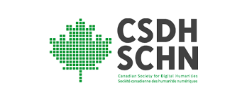

« the published texts of a project do not tell the same story as participant observer story. »
« Les publications d'un projet ne racontent pas la même histoire que celle observée par les participant.e.s. »
know-how connaissance tacite
savoir propositionnel formal knowledge
« [W]hat is written down in the scientific textbook and what goes on in practice in the scientific laboratory, in other words the day-to- day operation of know-how, are by no means the same things. »
« [C]e qui est écrit dans les manuels scientifiques et ce qui se passe dans la pratique au sein d’un laboratoire scientifique, autrement dit le fonctionnement quotidien du savoir-faire, ne sont en aucun cas la même chose. »
« [T]he crafting together of a complex machinery made of heterogeneous materials, mobilized in the service of developing a theory of mind. »
« [L]a construction conjointe d’un mécanisme complexe composé de matériaux hétérogènes, mis au service de l’élaboration d’une théorie de l’esprit. »
between white
et gris
« So, in early 2018, an editor at Sens public pointed out a problem with an article. The article contained italic text in the title, which caused a problem when converting the article to HTML. Stylo is a text editor that uses Markdown for the body text, BibTeX for bibliographic references, and YAML for metadata. These formats are then converted into a variety of output formats for publication using the Pandoc conversion tool. »
« This type of bodily, concrete, yet invisible labour produces a type of knowledge which is regarded as subordinate to mental knowledge. Small wonder that the machines to which that AI gives birth are mental machines, devoid of bodies and bodily knowledge. »
« Ce type de travail physique, concret mais invisible, produit un savoir considéré comme subordonné au savoir intellectuel. Il n’est donc pas étonnant que les machines que l’IA produit soient des machines intellectuelles, dépourvues de corps et de savoir corporel. »
« The challenge then was to extract and categorize this information from the “Notes” field and transfer it to the various thematic fields in EMID. A Brazilian doctoral student was hired to begin the work. Within two months, she had completed the coding of the offense, the sentence, the defendant’s occupation, and the places of origin and residence for half of the database. In 2023, we were able to process the other half of the database in just three days, at a cost of less than 100 euros, using a “large language model” (LLM), also known as artificial intelligence. »
does all the DH projects deserve to be archived ?
ne devrait-on pas peut-être archiver les gris ?
Merci
Thank you